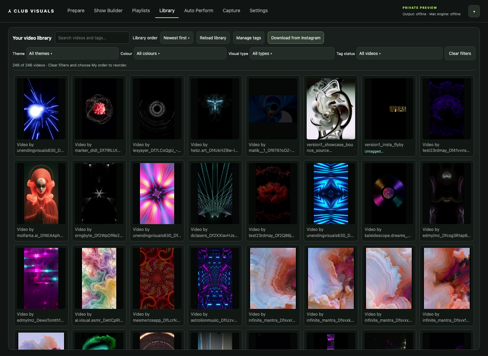

2. Build and organise the library
Import your own edits, download sources and find the right clip quickly.
Add an MP4 you edited yourself
- Check the configured Source video folder in Settings.
- Copy the MP4 there. Give it a descriptive filename. Keep a separate original if you plan further editing.
- Press Reload library above the workspaces.
- Set Library order → Newest first. Your new file should appear near the top.
Newest-first uses the file's modification time, rather than a date embedded in its filename. A freshly copied file may keep its original timestamp. Search by its name if it appears lower down. The shared order is used by library browsers and source pickers; it does not rearrange a saved playlist.


Download from Instagram
- Open Settings and expand the Instagram connection panel.
- Choose your browser and profile, sign into Instagram in that browser, and use the app's refresh/connect action.
- Paste the reel or post URL into the download field and start the download.
- Wait for completion, then reload the library if it has not refreshed already.
Browser-session cookies are exported locally for yt-dlp. A browser/Keychain prompt can appear when the session is read. The application does not need you to type an Instagram password into the visual editor. If authentication expires, sign in again in the chosen browser/profile and refresh the connection. A successful previous export does not guarantee that Instagram will accept the session indefinitely.
Reuse an app capture
Social exports are kept separate from ordinary source discovery. Open Capture → Reuse a saved capture, choose the export, then click Add to library. A capture_… copy becomes a source while the original export stays in its destination. Repeating the import reuses an identical existing copy. For captures saved after the list loaded, press Refresh saved captures. Logo-render presets already add their MP4 directly to the library.
Search, filter and classify
Combine the text search with Theme, Colour, Visual type and Tag status. Clear filters if a known file disappears. Choose My order to use saved drag order; other sort modes arrange by name or classification. Clearing filters preserves the selected sort mode.

Manage classification tags opens a separate review interface. Inspect the actual video before marking it reviewed. Add or remove individual chips, edit notes, or select several videos and apply bulk tags. Selections can remain selected after filters change, so check the selected count before a bulk action. All tags & usage shows where a tag is used and offers rename/remove operations. Undo last tag change reverses the most recent supported catalogue change.